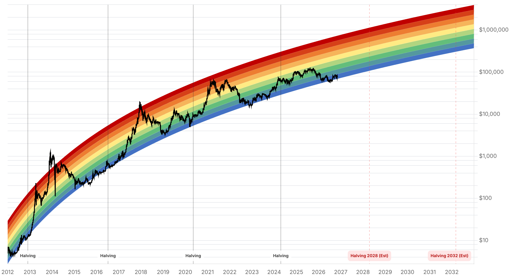

Reporte financiero
BTC cotiza en vivo a USD 75.292,12 (07:17 UTC, -0,91% intradía vs. cierre previo de USD 75.982,81), tras una reversión abrupta que borró por completo el rally post-electoral: tan solo ayer el precio en vivo del reporte marcaba USD 80.579,97 -una caída de -6,6% en 24 horas-, y el cierre diario cayó de USD 80.405,29 el 4 de noviembre a USD 75.942,13 el 5 de noviembre (-5,6% en una sola sesión). Lo nuevo y clave: a diferencia de la caída de la noche electoral (impulsada por incertidumbre política específica de cripto), este desplome lo gatilló un selloff generalizado en Wall Street centrado en acciones de IA y semiconductores -no una noticia cripto-. Según Coin-Turk (6 nov, citando datos de CoinGlass), el Nasdaq Composite cerró el 5 de noviembre con una baja de 5,5% (24.315 puntos, -11,9% desde su máximo de octubre), el S&P 500 cayó 4,4% y Nvidia se desplomó 9,3%, arrastrado por dudas sobre el ritmo de inversión en infraestructura de IA y, según Qualcomm, ventas de chips para smartphones más débiles de lo esperado. Ipek Ozkardeskaya, analista de Swissquote, declaró a Reuters: 'Coming into this earnings season, there were worries that AI spending was too much' ('De cara a esta temporada de resultados, ya había preocupación de que el gasto en IA fuera excesivo'). Michael Cembalest, ejecutivo de J.P. Morgan, reportó una caída del 8% en la exposición accionaria de hedge funds y cifró en ~USD 4 billones los compromisos fuera de balance ligados a IA, advirtiendo que 37,5 GW de capacidad de centros de datos planeada para 2028 podría sufrir demoras de construcción (las describe como pausas, no cancelaciones). Foundry Labs midió una correlación de 0,41 entre BTC y el QQQ (Nasdaq) en una ventana de 63 días, y observó que los mineros públicos de Bitcoin se mueven en sintonía con las acciones de infraestructura de IA -es decir, BTC está operando hoy más como un activo de riesgo correlacionado a Nasdaq que de forma idiosincrática-. Las liquidaciones cripto en 24 horas alcanzaron entre USD 1.030 y 1.100 millones (CoinGlass, cifras varían por ventana de medición), con ~89-90% en posiciones largas; BTC representó entre USD 256 y 330 millones del total, y el pico fue de USD 880-925 millones en una ventana de cuatro horas. El Fear & Greed Index se desplomó de 50 (Neutral, ayer) a 28 (Fear, hoy) -una reversión casi tan brusca como el salto inverso de ayer-. Técnicamente, BTC perdió la banda de soporte de USD 75.600-76.000 (donde había encontrado compradores en la noche electoral) y quedó apenas por debajo de su media móvil simple de 50 semanas (~USD 75.733, según The Coin Republic, 5 nov) -un cierre semanal bajo esa línea señalaría debilidad estructural-. Wintermute (vía Coin-Turk) calificó el rebote post-electoral como una fase de optimismo pasajero y señaló que BTC debe reconquistar USD 80.000 para que el panorama vuelva a ser constructivo, con soportes clave en USD 73.000 y USD 68.000 si continúa la caída (paráfrasis de la firma, sin cita textual verificada). Paul Howard, de Wincent, advirtió -también parafraseado, sin cita textual- que las ganancias demócratas en el Congreso (confirmadas ayer) podrían complicar la aprobación de la Clarity Act, en línea con lo ya señalado en ediciones anteriores sobre el riesgo de que el control demócrata enlentezca la legislación cripto. Los flujos de ETFs spot de Bitcoin (FarSide, vía Coin-Turk) muestran una semana mixta: -USD 643,2M (30 oct), -USD 398,6M (2 nov), -USD 115,6M (3 nov, total de tres días: -USD 1.160M) y luego un giro a +USD 74,6M netos el 4 de noviembre (FBTC de Fidelity +USD 236,7M, IBIT de BlackRock -USD 201,2M); los datos del 5 de noviembre estaban incompletos al momento de la consulta. Acciones de Coinbase y Strategy cayeron al menos 9% intradía el 5 de noviembre. Mohamed El-Erian (economista, citado por The Coin Republic) cuestionó si el nuevo Congreso podría frenar al sector tecnológico, y Rekt Capital trazó un paralelismo con mayo de 2026, cuando BTC cotizaba cerca de USD 80.000 antes de caer a ~USD 57.000 hacia fines de junio -ambos comentarios parafraseados, sin cita textual disponible-. Sin novedades verificadas desde ayer en: la decisión de MSCI sobre Strategy (pendiente para el 11 de noviembre), la vulnerabilidad de BTCPay Server 2.4.7, el movimiento de fondos del hackeo de Binance en Tron, la venta de la ballena de Solana, el Pleno del PCCh, la apelación del Reino Unido sobre los 61.000 BTC y la respuesta de Cantor Fitzgerald al requerimiento del senador Blumenthal.
El precio en vivo cayó de USD 80.579,97 (ayer, 07:17 UTC) a USD 75.292,12 (hoy, 07:17 UTC), una caída de -6,6% en 24 horas, luego de que el cierre diario pasara de USD 80.405,29 el 4 de noviembre a USD 75.942,13 el 5 de noviembre (-5,6% en una sesión). A diferencia de la caída de la noche electoral -ligada a incertidumbre política específica de cripto, ya resuelta-, este movimiento lo gatilló un selloff generalizado de activos de riesgo: según Coin-Turk (6 nov, datos CoinGlass/mercado), el Nasdaq Composite cerró el 5 de noviembre con -5,5% (24.315 puntos, -11,9% desde su máximo de octubre), el S&P 500 -4,4% y Nvidia -9,3%, mientras Qualcomm reportó ventas de chips para smartphones más débiles de lo esperado. Ipek Ozkardeskaya (Swissquote) dijo a Reuters: 'Coming into this earnings season, there were worries that AI spending was too much.' Michael Cembalest (J.P. Morgan) documentó una caída del 8% en exposición accionaria de hedge funds y ~USD 4 billones en compromisos fuera de balance ligados a IA, con 37,5 GW de capacidad de centros de datos planeada para 2028 en riesgo de demora (pausas, no cancelaciones, según su lectura). Foundry Labs midió una correlación de 0,41 entre BTC y el QQQ a 63 días, y observó que los mineros públicos de Bitcoin se mueven en sintonía con las acciones de infraestructura de IA.
Según CoinGlass (vía Coin-Turk, 6 nov), las liquidaciones de las últimas 24 horas sumaron entre USD 1.030 y 1.100 millones, con un pico de USD 880-925 millones en una ventana de cuatro horas; las posiciones largas representaron ~89-90% del total (The Coin Republic, 5 nov, cita cifras algo menores en una lectura anterior: ~USD 1.030M totales, USD 925M en largos). BTC por sí solo aportó entre USD 256 y 330 millones de las liquidaciones, según la ventana de medición. Esta cifra confirma que el movimiento fue impulsado por apalancamiento excesivo en posiciones alcistas que se formaron durante el rally del 4 de noviembre, no por una fuga de capital estructural.
El índice de sentimiento cripto (alternative.me) cayó 22 puntos en un día, de 50 (Neutral, ayer) a 28 (Fear, hoy) -revirtiendo casi por completo el salto de 16 puntos del día anterior (34 a 50)-. Técnicamente, BTC perdió la banda de soporte de USD 75.600-76.000 donde había encontrado compradores durante la noche electoral, y cotiza apenas por debajo de su media móvil simple de 50 semanas (~USD 75.733, según The Coin Republic, 5 nov); un cierre semanal bajo esa línea señalaría debilidad estructural adicional. Wintermute (parafraseado, sin cita textual, vía Coin-Turk) sostiene que BTC debe reconquistar USD 80.000 para que el panorama vuelva a ser constructivo, con los siguientes soportes en USD 73.000 y USD 68.000 si la caída continúa.
Datos de FarSide (vía Coin-Turk, 6 nov) muestran: -USD 643,2M el 30 de octubre, -USD 398,6M el 2 de noviembre, -USD 115,6M el 3 de noviembre (total de tres días: -USD 1.160M, cifra ya mencionada ayer sin el desglose diario), y un giro a +USD 74,6M netos el 4 de noviembre, con el FBTC de Fidelity aportando +USD 236,7M y el IBIT de BlackRock restando -USD 201,2M. Los datos del 5 de noviembre estaban incompletos al momento de la consulta de esta fuente. Acciones de Coinbase y Strategy cayeron al menos 9% intradía el 5 de noviembre, en línea con el selloff generalizado de activos de riesgo.
La decisión final de MSCI sobre si excluir a Strategy de sus índices sigue pendiente para el 11 de noviembre (entrada en vigor tras el cierre del 30 de noviembre). No se hallaron novedades sobre la vulnerabilidad de BTCPay Server 2.4.7, el movimiento de fondos del hackeo de Binance en la red Tron, la venta de la ballena de Solana, la resolución del Pleno del PCCh, la apelación del Reino Unido sobre los 61.000 BTC (sigue proyectada para 2027) ni la respuesta de Cantor Fitzgerald al requerimiento del senador Blumenthal -todos temas ya cubiertos en reportes anteriores. Paul Howard, de Wincent (parafraseado, sin cita textual, vía Coin-Turk), advirtió que las ganancias demócratas en el Congreso -confirmadas ayer- podrían complicar la aprobación de la Clarity Act, en línea con lo ya señalado sobre el riesgo de que el control demócrata enlentezca la legislación cripto.
| Periodo | Valor |
|---|---|
| 31 oct | 77434.75 |
| 1 nov | 78248.45 |
| 2 nov | 76677.3 |
| 3 nov | 77345.05 |
| 4 nov | 80405.29 |
| 5 nov | 75942.13 |
| 6 nov (en vivo) | 75292.12 |
| Periodo | Valor |
|---|---|
| Hoy | 28 |

“Coming into this earnings season, there were worries that AI spending was too much.”
“El rebote post-electoral fue una fase de optimismo pasajero: BTC debe reconquistar los USD 80.000 para que el panorama vuelva a ser constructivo; de lo contrario, los próximos soportes son USD 73.000 y USD 68.000.”
El foco inmediato pasa de la política (ya descontada) a Wall Street: BTC debe reconquistar la banda de USD 75.600-80.000 para evitar un retest de los soportes de USD 73.000 y USD 68.000 que señala Wintermute. El detonante -un selloff de acciones de IA/semiconductores, no una noticia cripto- implica que el corto plazo de BTC depende hoy más de cómo evolucione el apetito de riesgo en Nasdaq que de catalizadores idiosincráticos cripto; Foundry Labs mide una correlación BTC-QQQ de 0,41 a 63 días, la más alta citada en reportes recientes.
Dos frentes a vigilar sin resolución aún: (1) si la pausa en inversión de infraestructura de IA que describe J.P. Morgan (37,5 GW de capacidad 2028 en riesgo de demora) se profundiza o es transitoria, dado el peso que el gasto en IA tiene sobre el sentimiento de riesgo general; y (2) cómo el control demócrata del Congreso -confirmado el 3 de noviembre- afecta en la práctica a la Clarity Act, con Paul Howard (Wincent) advirtiendo sobre mayor dificultad de aprobación. La decisión de MSCI sobre Strategy (11 de noviembre) sigue como riesgo específico pendiente para MSTR como proxy de Bitcoin, sin cambios desde ayer.
Sin cambios en los objetivos de precio de largo plazo ya reportados en ediciones anteriores (Citigroup, Bernstein, Standard Chartered, Tom Lee, NYDIG, Armstrong, piso de costo de producción de JPMorgan en USD 94.000). Como referencia de cuán rápido pueden revertirse los rallies, Rekt Capital señaló (parafraseado, sin cita textual) el paralelismo con mayo de 2026, cuando BTC cotizaba cerca de USD 80.000 antes de caer a ~USD 57.000 hacia fines de junio -un recordatorio de que el patrón de reversión brusca tras una recuperación no es inédito en este ciclo. BTC sigue muy por debajo de su máximo de 52 semanas de USD 107.428.
The Coin Republic señala que BTC quedó apenas por debajo de su media móvil de 50 semanas (~USD 75.733); un cierre semanal bajo esa línea sería la confirmación técnica de debilidad estructural, mientras que un rebote rápido de vuelta sobre USD 76.000-80.000 invalidaría la señal bajista. Actuar antes de esa confirmación expone a quedar atrapado en cualquiera de los dos sentidos de un movimiento todavía no resuelto.
La serie de la semana (-643,2M, -398,6M, -115,6M, luego +74,6M) muestra que el flujo cambió de signo en un solo día (4 de noviembre), con el FBTC de Fidelity compensando buena parte de la salida del IBIT de BlackRock. Extrapolar una narrativa de 'salida sostenida' o 'entrada sostenida' a partir de un solo día de datos es poco confiable dada esta volatilidad reciente.
Foundry Labs mide una correlación de 0,41 entre BTC y el QQQ a 63 días, y observa que los mineros públicos de Bitcoin se mueven en sintonía con acciones de infraestructura de IA. Mientras dure el debate sobre el ritmo de inversión en IA (J.P. Morgan cifra ~USD 4 billones en compromisos fuera de balance y 37,5 GW de capacidad 2028 en riesgo), el riesgo de que BTC siga arrastrado por un selloff de Wall Street -más allá de sus propios fundamentos- es más alto de lo habitual.